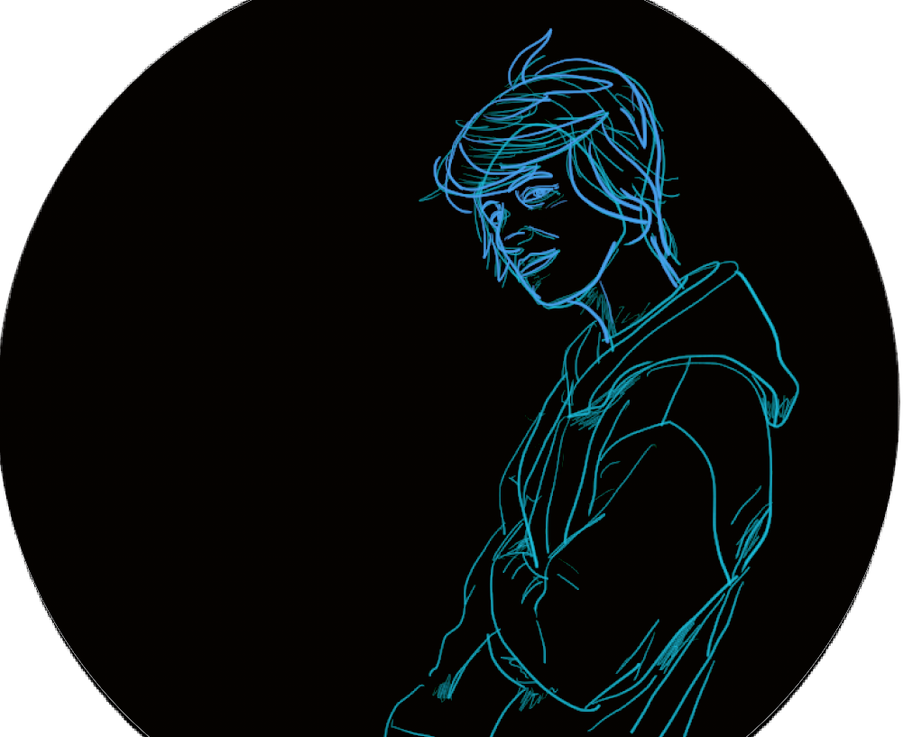

I am a software engineer with an honours degree in Computer Science, 3.5 years full stack experience, and 1.5 years frontend experience in various technologies. I have worked on a few personal projects, and have made websites and mobile apps for personal use. I enjoy being creative and I enjoy problem solving. I care about writing good quality code and appreciate good tests. I have a diverse set of skills and am able to pick up new languages and technologies quickly. I have also done training and work as an audio engineer.
My honours thesis project was on annotation systems for machine translation of sign languages, and my masters thesis project (not completed) involved audio networking using the XMOS AVB boards as a hardware plug-in for audio processing.
My interests are in health (particularly mental health), audio, linguistics, childhood development, education, data science, and hardware interfacing.